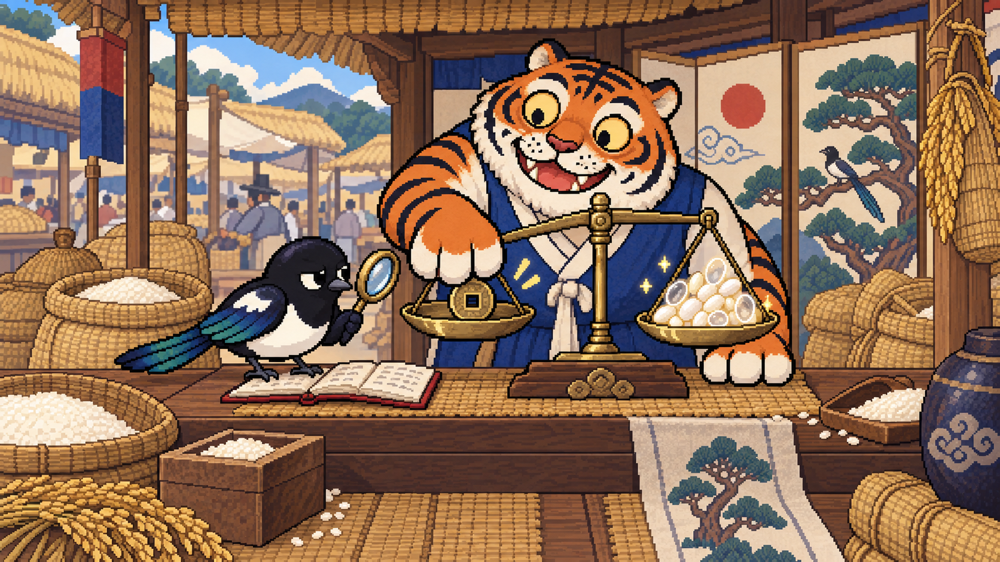

확정 사항
- 마스코트
- 깍이 (Kkagi) — ① 까치 울음 "깍깍" ② "토큰 맨날 깍네". 공식 소개는 ①, 캠페인은 ②.
- 세계관
- 오작교 까치가 다리를 놓아 토큰을 나른다 + 민화 까치호랑이로 요금제 정책을 비튼다.
- 토큰
- 반짝이는 쌀알 (grain). 진주빛 흰색 + 작은 반짝임. 금색·코인 금지(크립토 오해).
- 한도 · 비용
- 한도 = 쌀자루, 낸 값 = 엽전 한 닢(풍자 장면에서만).
- 로고
- 현재 오작교 까치 로고 그대로.
- 디자인
- 도트 민화 전면 테마. 숫자·이메일·표는 시스템 글꼴. 진지 모드 제공.
- 풍자 수위
- 가볍지만 강도 있게. 공식 문구만 인용, 정책을 웃고 회사·사람은 조롱하지 않음.
풍자 메인 · 호랑이 쌀가게

H. 엄지 저울
엽전 한 닢 냈는데, 호랑이는 엄지로 저울을 누르고 쌀알 몇 개는 속이 비었다. 깍이는 돋보기로 그 엄지를 본다.
조선 장터 쌀가게(가마니·멍석·됫박·까치호랑이 병풍). 질소과자와 저울 덜기를 한 장에. 랜딩 풍자 섹션·포스터·SNS 대표 이미지.
캠페인 카피
[Pro 200] 밸런스 패치 v2026.9
가격 ........ 변경 없음사용량 ...... 하향 ▼
사유 ........ 모델이 너무 효율적이어서
[Ojak] 대응 패치
깍이 ........ 남은 쌀알, 리셋 전에 끝까지 나름낭비 ........ 한 톨도 없게
우회 ........ 안 함. 내가 낸 만큼만, 남김없이.
원문: "a lower usage allowance … to reflect our increasingly efficient models" — help.openai.com/en/articles/9793128 (2026-10-03 확인)
앱 안에서

깍이 상태
쉼 · 나름 · 헐떡 · 기절 · 부활 · 급함. 리터칭 때 "나름"의 편지를 쌀알로 교체.

작업 액션
자루 → 노트북으로 쌀알 나르기 루프. 속도는 실제 요청량에 맞춤. 교대·곧 리셋·소진·리셋 충전 4장면.

저울 상황판 (아랫단 4종)
| 저울 | 뜻 | 테두리 색 (기존 규칙) |
|---|---|---|
| 균형 | 쓰는 속도가 맞음 | 초록 |
| 쌀 쪽이 무거움 | 곧 리셋인데 많이 남음 → 지금 쓰기 | 파랑 |
| 시간 쪽이 무거움 | 너무 빨리 쓰는 중 | 주황 |
| 빈 접시 | 소진, 리셋 대기 | 빨강 |
앱에서는 저울만 쓴다(호랑이 없음). 배경색은 빼고 테두리만 기존 잔여량 색 규칙을 따른다. 리셋까지 남은 시간 비율은 한도 라벨(주간 등)에서 기간을 추정한다.
어디에 무엇을
랜딩 첫 화면
오작교 (맨 위 이미지)
풍자 메인
호랑이 쌀가게 + 패치노트
앱
깍이 상태 · 작업 액션 · 저울 상황판
SNS
호랑이 쌀가게 · 질소과자 (출처 캡션 필수)
공개 전 남은 일
- 도트 리터칭: 상태 6종의 편지 → 쌀알, 작업 액션 7번 컷 얼룩 제거·배경 단색, 저울 배경 → 상태색 테두리
- 호랑이 쌀가게 병풍의 빨간 원: 흰 바탕 + 빨간 원이 일장기로 읽힐 수 있음 → 일월오봉도식 해·달 한 쌍이나 소나무로 교체
- AI 생성 이미지: OpenAI 약관상 산출물 권리는 이용자(2026-10-07 확인). 기존 저작물 유사성은 약관이 보장하지 않음
- 약관 법무 검토 · Apple 서명·공증
- OpenAI 원문 재확인: 2026-10-07 Terms of Use (2026-01-01) Ownership of content